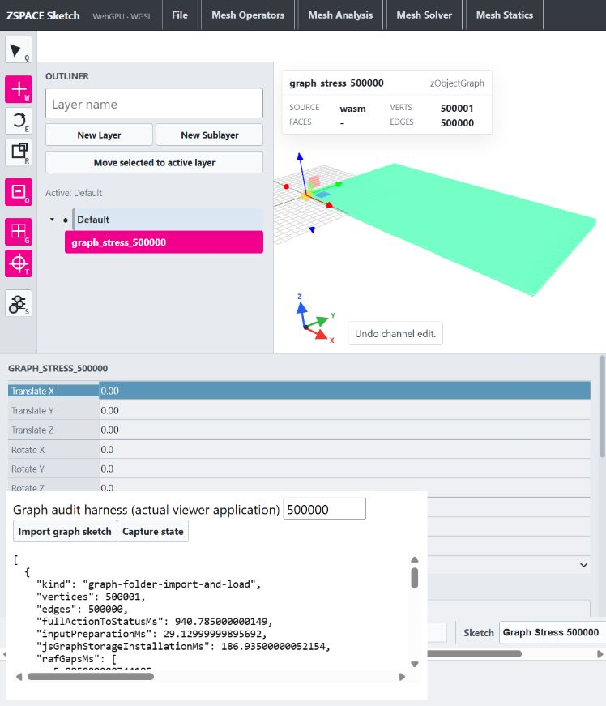

8 October 2026 · Native read-only cache boundary and local allocation cleanup · Approval received · No commit or push
Original baseline audit · Current searchable machine inventory · Results JSON · Sequence
Ordinary graph iterator reads reuse authoritative directed topology. Escaped mutable backend and flat views retain the legacy synchronization path. Edge geometry reads directly from flat endpoints; bounds use positions by reference with alias-copy fallback. Public signatures, edge direction/IDs, cyclic order, activity/attributes, exceptions and numerical order remain intact in the exercised cases.
50 exact fixture cases, 48 representative benchmark samples, 12 full baseline scan digests and 4/4 CTest checks passed. All optimized scans validate original directed ID/head/sym order through 500,000 edges. Profile counters: one topology build and zero edge-list synchronizations for every ordinary read-only case; baseline vector query alone incurred ten syncs. Profiles and production runs are separate. Final counters reconfirm zero syncs for four read-only shapes and one legacy sync after flat-view escape; final counter evidence.
Production comparison repeated sequentially after unchanged construction/flat phases varied substantially. Both initial runs are retained: initial before, initial after. Table shows the repeat, not selected minima. No first-construction speedup is claimed.
Release MSVC; medians of three sequential trials per shape/size. Vertices and undirected edges reported separately; scans visit 2E directed halfedges. Milliseconds. First topology construction remains expensive and was not optimized. Baseline full scans above 1,000 edges were bounded to avoid quadratic runtime. Preparation/install baseline was combined; after columns split those phases. No confidence interval or GPU/JS inclusion.
| Shape | V | E | Vector before | Vector after | 2E scan after | Topology after | Input after | Install after |
|---|---|---|---|---|---|---|---|---|
| chain | 1001 | 1000 | 0.8752 | 0.0007 | 0.164 | 2.964 | 0.013 | 0.030 |
| chain | 10001 | 10000 | 6.1046 | 0.0036 | 1.684 | 30.662 | 0.106 | 0.306 |
| chain | 100001 | 100000 | 117.2641 | 0.0042 | 15.807 | 347.102 | 0.740 | 2.339 |
| chain | 500001 | 500000 | 835.7661 | 0.0048 | 85.020 | 2189.958 | 3.944 | 10.039 |
| loop | 1000 | 1000 | 0.5445 | 0.0012 | 0.278 | 4.571 | 0.024 | 0.043 |
| loop | 10000 | 10000 | 5.0571 | 0.0044 | 2.086 | 48.809 | 0.107 | 0.284 |
| loop | 100000 | 100000 | 115.6217 | 0.0047 | 23.580 | 522.517 | 1.829 | 3.124 |
| loop | 500000 | 500000 | 817.8378 | 0.0056 | 128.140 | 2987.854 | 7.287 | 10.670 |
| branch | 1001 | 1000 | 0.7848 | 0.0021 | 0.277 | 4.584 | 0.023 | 0.035 |
| branch | 10001 | 10000 | 8.1209 | 0.0050 | 2.771 | 44.581 | 0.217 | 0.540 |
| branch | 100001 | 100000 | 146.4720 | 0.0049 | 24.823 | 552.183 | 1.942 | 3.170 |
| branch | 500001 | 500000 | 878.4694 | 0.0056 | 133.544 | 2973.468 | 8.032 | 10.244 |
| disconnected | 1250 | 1000 | 0.8327 | 0.0025 | 0.278 | 5.028 | 0.050 | 0.051 |
| disconnected | 12500 | 10000 | 6.2627 | 0.0049 | 2.610 | 51.337 | 0.371 | 0.533 |
| disconnected | 125000 | 100000 | 125.3034 | 0.0054 | 27.159 | 566.678 | 3.776 | 3.598 |
| disconnected | 625000 | 500000 | 817.3237 | 0.0056 | 128.611 | 3371.217 | 15.566 | 11.639 |
Raw samples: before, after, profile before, profile after. Microsecond vector numbers approach timer/dispatch overhead; avoided synchronization is the decisive evidence.
Empty, chains, loops, branches, disconnected components, isolated vertices, duplicate/reversed edges, self edges, duplicate positions/signed zero, deferred malformed-input errors, inactive vertex/edge/halfedge, escaped raw color and mutable topology, link/endpoint/ID edits, copies/assignment/move/getDuplicate, reacquired raw positions, alias bounds, averaging/colors and ribbon geometry/normals.
Exact JSON plus FNV-1a digests of scalar bytes, including floating geometry/colors/weights. No epsilon comparison. Hash evidence is not collision-proof full byte storage. All optimized full scans additionally validate every directed ID/head/sym in original flat endpoint order through E=500000 (2E halfedges). Baseline full scans above E=1000 intentionally not run; large baseline captures geometry vector, exact flat digest, counts and length total.
Baseline fixtures · After fixtures · CTest log. Existing exception messages and inactive-compaction behavior are retained. Conservative escape tracking is copied; backend flag resets on topology discard and flat flag only when synchronized storage replacement invalidates its views. Eight supplemental public-only cases exercise retained pointer/copy behavior against the saved DLLs.
Actual viewer app /src/main.ts, existing sketch-folder File import + Load; unchanged installed runtime. Graph primitives are JS-owned; no native graph ABI on this path. Single sample per size. Includes deliberate 150ms metadata wait, polling, graph setup/conversion/publication and scheduling to built status. Earlier 1k/100k results were captured from browser output before dev-page refresh. First large attempt was lost to a page refresh; repeat on idle viewer passed. No controlled browser before/after speedup claim.
| V | E | Action to status ms | Input ms | JS storage ms |
|---|---|---|---|---|
| 1001 | 1000 | 190.455 | 0.235 | 0.540 |
| 100001 | 100000 | 327.100 | 7.270 | 35.330 |
| 500001 | 500000 | 940.785 | 29.130 | 186.935 |
Wheel zoom visually verified on 500000-edge graph; canvas remained rendered and counts intact. Translate X=2 committed via Enter; Undo restored X=0/status Undo channel edit; Redo restored X=2/status Redo channel edit; restored X=0 afterward. Graph counts stayed V=500001/E=500000. Page keyboard shortcuts verified; native-input/button attempts that did not change state were not counted as passes.
Discard first value: rAF timestamp is frame-start time and can precede status sampling. Remaining entries are callback intervals; no GPU fence/completion/FPS measurement. No error/warn entries captured during history verification.
Browser evidence · Actual Node conversion baseline. Node 500k chain conversion remains about 232ms and one primitive clone about 9ms; that JS path was unchanged.

wasm/scripts/build-wasm.bat passed before and after. 12 buffers byte-identical at cube stages 0-8, through 393216 quads. This checks the reachable mesh/default ABI, not a direct native graph WASM fixture.
Baseline WASM SHA256: 3279794344d160faa6d6b6630b29f8e1d7c834b1d73dd19b1dfc83bc37c5a2b4 (675911 bytes). Final rebuilt: f60e36697d449a5164af46930c8a426c53a8b23c8313495962d558dbf850778c (692661 bytes). No installed runtime replacement. Final rebuilt WASM differs from the saved build and installed viewer runtime; twelve reachable buffer outputs match exactly. Neither module exposes a direct graph ABI. The rebuilt default module also contains USD scene exports absent from the installed default module, so replacement would bundle unrelated bridge/OpenUSD work. The tested viewer graph path is JS-owned and does not consume these native iterator reads. Existing installed runtime and OpenUSD module preserved.
npm run build passed before work and after report-only harness installation. No viewer implementation/sketch/runtime edits or extraction. build/graph-optimization-before/ contains source/native/runtime baseline copies; no installed-artifact replacement occurred.
Existing dirty/untracked mesh, OpenUSD and viewer work was retained. CMake changes are only the graph benchmark/parity target and opt-in profiling definition. Production profiling is OFF. This task did not change roadmap checkboxes because it does not implement pending geometry ABI milestones. Concurrent unrelated bridge/viewer changes observed since the original audit were preserved; see the current inventory source hashes. WASM byte-size differences are not attributed solely to the graph patch.
After native working set sampled at end of queries; process peak is cumulative across cases and includes allocator retention, not per-graph peak. No native before memory sample. Cached full topology and flat storage remain; no claim of eliminating persistent topology memory. Node JS conversion baseline records ArrayBuffer/RSS deltas; browser heap is sampled, not peak/GPU memory.
500k after-process working sets: chain 306.1–306.4 MiB; loop 306.4–306.7 MiB; branch 317.9–318.3 MiB; disconnected 336.8–345.9 MiB. Large browser sample heap used 224.3 MiB. These are distinct sampled process/JS observations.
src/zInterface/objects/zGraphObjectStorage.hsrc/zInterface/iterators/zItGraph.cppsrc/zInterface/functionsets/zFnGraph.cppCMakeLists.txttests/performance/graph_functionset_benchmark.cpptests/smoke/graph-query-golden.jsontests/smoke/graph-public-query-golden.jsonNew reports/scripts/data plus report-only ../zspace_alice_webviewer/reports/graph-viewer-verification.html and build log. No viewer production code, sketches or installed runtime changed. Supplemental retained-view evidence: before, first-patch mismatch evidence, fixed after. All eight supplemental cases match the saved DLLs; the first patch differed in five sequences.
Next boundary: Profile and reserve first-materialization storage/maps while keeping exact construction order; then first-match flat edge lookup and insertion-order incidence/BFS membership. Viewer pre-sized primitive conversion remains a separately measured JS boundary.
162 primary definitions; 90 dependency definitions; 17 inline helpers including opt-in profiling. Declarations reconciled 162/162. Public signatures unchanged. Candidate dependencies use conservative name matching, not compiler type resolution.
| Definition | File : line | Access |
|---|---|---|
| ZSPACE_INLINE zObjectGraph::zObjectGraph() | src/zInterface/objects/zObjectGraph.cpp:6 | |
| ZSPACE_INLINE zObjectGraph::zObjectGraph(const zObjectGraph& other) | src/zInterface/objects/zObjectGraph.cpp:11 | |
| ZSPACE_INLINE zObjectGraph::zObjectGraph(zObjectGraph&& other) noexcept = default; | src/zInterface/objects/zObjectGraph.cpp:17 | |
| ZSPACE_INLINE zObjectGraph& zObjectGraph::operator=(const zObjectGraph& other) | src/zInterface/objects/zObjectGraph.cpp:19 | |
| ZSPACE_INLINE zObjectGraph& zObjectGraph::operator=(zObjectGraph&& other) noexcept = default; | src/zInterface/objects/zObjectGraph.cpp:27 | |
| ZSPACE_INLINE zObjectGraph::~zObjectGraph() = default; | src/zInterface/objects/zObjectGraph.cpp:28 | |
| ZSPACE_INLINE zFnGraph::zFnGraph() | src/zInterface/functionsets/zFnGraph.cpp:25 | |
| ZSPACE_INLINE zFnGraph::zFnGraph(zObjectGraph &_graphObj, bool _planarGraph, zVector _graphNormal) | src/zInterface/functionsets/zFnGraph.cpp:33 | |
| ZSPACE_INLINE void zFnGraph::setObject(zObjectGraph &_graphObject) | src/zInterface/functionsets/zFnGraph.cpp:43 | |
| ZSPACE_INLINE zObjectGraph* zFnGraph::object() const | src/zInterface/functionsets/zFnGraph.cpp:48 | |
| ZSPACE_INLINE bool zFnGraph::hasObject() const | src/zInterface/functionsets/zFnGraph.cpp:53 | |
| ZSPACE_INLINE zFnGraph::~zFnGraph() {} | src/zInterface/functionsets/zFnGraph.cpp:60 | |
| ZSPACE_INLINE zFnType zFnGraph::getType() | src/zInterface/functionsets/zFnGraph.cpp:64 | |
| ZSPACE_INLINE void zFnGraph::getBounds(zPoint &minBB, zPoint &maxBB) | src/zInterface/functionsets/zFnGraph.cpp:73 | flatRead |
| ZSPACE_INLINE void zFnGraph::clear() | src/zInterface/functionsets/zFnGraph.cpp:103 | flatEdit |
| ZSPACE_INLINE void zFnGraph::create(zPointArray(&_positions), zIntArray(&edgeConnects), int precision) | src/zInterface/functionsets/zFnGraph.cpp:110 | flatEdit |
| ZSPACE_INLINE void zFnGraph::create(zPointArray(&_positions), zIntArray(&edgeConnects), zVector &graphNormal) | src/zInterface/functionsets/zFnGraph.cpp:115 | flatEdit |
| ZSPACE_INLINE void zFnGraph::createFromMesh(zObjectMesh &meshObj, bool excludeBoundary) | src/zInterface/functionsets/zFnGraph.cpp:126 | |
| ZSPACE_INLINE bool zFnGraph::addVertex(zPoint &_pos, bool checkDuplicates, zItGraphVertex &vertex) | src/zInterface/functionsets/zFnGraph.cpp:139 | flatEdit |
| ZSPACE_INLINE bool zFnGraph::addEdges(int &v1, int &v2, bool checkDuplicates, zItGraphHalfEdge &halfEdge) | src/zInterface/functionsets/zFnGraph.cpp:155 | flatEdit |
| ZSPACE_INLINE int zFnGraph::numVertices() | src/zInterface/functionsets/zFnGraph.cpp:181 | flatRead |
| ZSPACE_INLINE int zFnGraph::numEdges() | src/zInterface/functionsets/zFnGraph.cpp:186 | flatRead |
| ZSPACE_INLINE bool zFnGraph::edgeExists(int v1, int v2, int &outEdgeId) | src/zInterface/functionsets/zFnGraph.cpp:191 | flatRead |
| ZSPACE_INLINE int zFnGraph::numHalfEdges() | src/zInterface/functionsets/zFnGraph.cpp:196 | flatRead |
| ZSPACE_INLINE bool zFnGraph::vertexExists(zPoint pos, zItGraphVertex &outVertex, int precisionfactor) | src/zInterface/functionsets/zFnGraph.cpp:201 | flatRead |
| ZSPACE_INLINE bool zFnGraph::halfEdgeExists(int v1, int v2, int &outHalfEdgeId) | src/zInterface/functionsets/zFnGraph.cpp:212 | flatRead |
| ZSPACE_INLINE bool zFnGraph::halfEdgeExists(int v1, int v2, zItGraphHalfEdge &outHalfEdge) | src/zInterface/functionsets/zFnGraph.cpp:223 | |
| ZSPACE_INLINE void zFnGraph::computeEdgeColorfromVertexColor() | src/zInterface/functionsets/zFnGraph.cpp:236 | flatEdit |
| ZSPACE_INLINE void zFnGraph::computeVertexColorfromEdgeColor() | src/zInterface/functionsets/zFnGraph.cpp:255 | flatEdit |
| ZSPACE_INLINE void zFnGraph::averageVertices(int numSteps) | src/zInterface/functionsets/zFnGraph.cpp:295 | flatEdit |
| ZSPACE_INLINE void zFnGraph::removeInactiveElements(zHEData type) | src/zInterface/functionsets/zFnGraph.cpp:332 | |
| ZSPACE_INLINE void zFnGraph::setVertexPositions(zPointArray& pos) | src/zInterface/functionsets/zFnGraph.cpp:340 | flatEdit |
| ZSPACE_INLINE void zFnGraph::setVertexColor(zColor col, bool setEdgeColor) | src/zInterface/functionsets/zFnGraph.cpp:351 | flatEdit |
| ZSPACE_INLINE void zFnGraph::setVertexColors(zColorArray& col, bool setEdgeColor) | src/zInterface/functionsets/zFnGraph.cpp:360 | flatEdit |
| ZSPACE_INLINE void zFnGraph::setEdgeColor(zColor col, bool setVertexColor) | src/zInterface/functionsets/zFnGraph.cpp:379 | flatEdit |
| ZSPACE_INLINE void zFnGraph::setEdgeColors(zColorArray& col, bool setVertexColor) | src/zInterface/functionsets/zFnGraph.cpp:390 | flatEdit |
| ZSPACE_INLINE void zFnGraph::setEdgeWeight(double wt) | src/zInterface/functionsets/zFnGraph.cpp:403 | flatEdit |
| ZSPACE_INLINE void zFnGraph::setEdgeWeights(zDoubleArray& wt) | src/zInterface/functionsets/zFnGraph.cpp:411 | flatEdit |
| ZSPACE_INLINE void zFnGraph::getVertexPositions(zPointArray& pos) | src/zInterface/functionsets/zFnGraph.cpp:424 | flatRead |
| ZSPACE_INLINE zPoint* zFnGraph::getRawVertexPositions() | src/zInterface/functionsets/zFnGraph.cpp:429 | flatExpose |
| ZSPACE_INLINE void zFnGraph::getVertexColors(zColorArray& col) | src/zInterface/functionsets/zFnGraph.cpp:436 | flatRead |
| ZSPACE_INLINE void zFnGraph::getVertexWeights(zDoubleArray& weights) | src/zInterface/functionsets/zFnGraph.cpp:441 | flatRead |
| ZSPACE_INLINE zColor* zFnGraph::getRawVertexColors() | src/zInterface/functionsets/zFnGraph.cpp:446 | flatExpose |
| ZSPACE_INLINE void zFnGraph::getEdgeColors(zColorArray& col) | src/zInterface/functionsets/zFnGraph.cpp:453 | flatRead |
| ZSPACE_INLINE void zFnGraph::getEdgeWeights(zDoubleArray& weights) | src/zInterface/functionsets/zFnGraph.cpp:458 | flatRead |
| ZSPACE_INLINE zColor* zFnGraph::getRawEdgeColors() | src/zInterface/functionsets/zFnGraph.cpp:463 | flatExpose |
| ZSPACE_INLINE zPoint zFnGraph::getCenter() | src/zInterface/functionsets/zFnGraph.cpp:470 | flatRead |
| ZSPACE_INLINE void zFnGraph::getCenters(zHEData type, zPointArray ¢ers) | src/zInterface/functionsets/zFnGraph.cpp:486 | flatRead |
| ZSPACE_INLINE double zFnGraph::getHalfEdgeLengths(zDoubleArray &halfEdgeLengths) | src/zInterface/functionsets/zFnGraph.cpp:527 | flatRead |
| ZSPACE_INLINE double zFnGraph::getEdgeLengths(zDoubleArray &edgeLengths) | src/zInterface/functionsets/zFnGraph.cpp:552 | flatRead |
| ZSPACE_INLINE void zFnGraph::getEdgeData(zIntArray &edgeConnects) | src/zInterface/functionsets/zFnGraph.cpp:574 | flatRead |
| ZSPACE_INLINE zObjectGraph zFnGraph::getDuplicate(bool planarGraph, zVector graphNormal) | src/zInterface/functionsets/zFnGraph.cpp:579 | flatRead, flatEdit |
| ZSPACE_INLINE void zFnGraph::getGraphMesh(zObjectMesh &out, double width, zVector graphNormal) | src/zInterface/functionsets/zFnGraph.cpp:601 | topologyInspect, flatRead |
| ZSPACE_INLINE void zFnGraph::getGraphEccentricityCenter(zItGraphVertexArray & outV) | src/zInterface/functionsets/zFnGraph.cpp:755 | flatRead |
| ZSPACE_INLINE zItGraphVertex zFnGraph::splitEdge(zItGraphEdge &edge, double edgeFactor) | src/zInterface/functionsets/zFnGraph.cpp:849 | |
| ZSPACE_INLINE void zFnGraph::setTransform(zTransform &inTransform, bool decompose, bool updatePositions) | src/zInterface/functionsets/zFnGraph.cpp:934 | |
| ZSPACE_INLINE void zFnGraph::setScale(zFloat4 &scale) | src/zInterface/functionsets/zFnGraph.cpp:963 | |
| ZSPACE_INLINE void zFnGraph::setRotation(zFloat4 &rotation, bool appendRotations) | src/zInterface/functionsets/zFnGraph.cpp:981 | |
| ZSPACE_INLINE void zFnGraph::setTranslation(zVector &translation, bool appendTranslations) | src/zInterface/functionsets/zFnGraph.cpp:1002 | |
| ZSPACE_INLINE void zFnGraph::setPivot(zVector &pivot) | src/zInterface/functionsets/zFnGraph.cpp:1033 | |
| ZSPACE_INLINE void zFnGraph::getTransform(zTransform &transform) | src/zInterface/functionsets/zFnGraph.cpp:1043 | |
| ZSPACE_INLINE void zFnGraph::transformObject(zTransform &transform) | src/zInterface/functionsets/zFnGraph.cpp:1050 | flatEdit |
| ZSPACE_INLINE void zFnGraph::removeInactive(zHEData type) | src/zInterface/functionsets/zFnGraph.cpp:1069 | topologyMutable |
| ZSPACE_INLINE void zFnGraph::addToHalfEdgesMap(zItGraphHalfEdge &he) | src/zInterface/functionsets/zFnGraph.cpp:1140 | topologyMutable |
| ZSPACE_INLINE void zFnGraph::removeFromHalfEdgesMap(zItGraphHalfEdge &he) | src/zInterface/functionsets/zFnGraph.cpp:1145 | topologyMutable |
| ZSPACE_INLINE zItGraphVertex::zItGraphVertex() | src/zInterface/iterators/zItGraph.cpp:26 | |
| ZSPACE_INLINE zItGraphVertex::zItGraphVertex(zObjectGraph &_graphObj) | src/zInterface/iterators/zItGraph.cpp:32 | |
| ZSPACE_INLINE zItGraphVertex::zItGraphVertex(zObjectGraph &_graphObj, int _index) | src/zInterface/iterators/zItGraph.cpp:38 | flatRead |
| ZSPACE_INLINE void zItGraphVertex::begin() | src/zInterface/iterators/zItGraph.cpp:47 | |
| ZSPACE_INLINE void zItGraphVertex::operator++(int) | src/zInterface/iterators/zItGraph.cpp:52 | |
| ZSPACE_INLINE void zItGraphVertex::operator--(int) | src/zInterface/iterators/zItGraph.cpp:57 | |
| ZSPACE_INLINE bool zItGraphVertex::end() | src/zInterface/iterators/zItGraph.cpp:62 | flatRead |
| ZSPACE_INLINE void zItGraphVertex::reset() | src/zInterface/iterators/zItGraph.cpp:67 | |
| ZSPACE_INLINE int zItGraphVertex::size() | src/zInterface/iterators/zItGraph.cpp:72 | flatRead |
| ZSPACE_INLINE void zItGraphVertex::deactivate() | src/zInterface/iterators/zItGraph.cpp:78 | topologyMutable |
| ZSPACE_INLINE void zItGraphVertex::getConnectedHalfEdges(zItGraphHalfEdgeArray& halfedges) | src/zInterface/iterators/zItGraph.cpp:87 | |
| ZSPACE_INLINE void zItGraphVertex::getConnectedHalfEdges(zIntArray& halfedgeIndicies) | src/zInterface/iterators/zItGraph.cpp:104 | |
| ZSPACE_INLINE void zItGraphVertex::getConnectedEdges(zItGraphEdgeArray& edges) | src/zInterface/iterators/zItGraph.cpp:122 | |
| ZSPACE_INLINE void zItGraphVertex::getConnectedEdges(zIntArray& edgeIndicies) | src/zInterface/iterators/zItGraph.cpp:133 | |
| ZSPACE_INLINE void zItGraphVertex::getConnectedVertices(zItGraphVertexArray& verticies) | src/zInterface/iterators/zItGraph.cpp:144 | |
| ZSPACE_INLINE void zItGraphVertex::getConnectedVertices(zIntArray& vertexIndicies) | src/zInterface/iterators/zItGraph.cpp:156 | |
| ZSPACE_INLINE int zItGraphVertex::getValence() | src/zInterface/iterators/zItGraph.cpp:168 | |
| ZSPACE_INLINE void zItGraphVertex::getBSF(zItGraphVertexArray& bsf, zIntPairArray& vertexPairs) | src/zInterface/iterators/zItGraph.cpp:180 | flatRead |
| ZSPACE_INLINE void zItGraphVertex::getBSF(zIntArray& bsf, zIntPairArray& vertexPairs) | src/zInterface/iterators/zItGraph.cpp:257 | |
| ZSPACE_INLINE bool zItGraphVertex::checkValency(int valence) | src/zInterface/iterators/zItGraph.cpp:266 | |
| ZSPACE_INLINE int zItGraphVertex::getId() | src/zInterface/iterators/zItGraph.cpp:276 | |
| ZSPACE_INLINE zItGraphHalfEdge zItGraphVertex::getHalfEdge() | src/zInterface/iterators/zItGraph.cpp:281 | topologyInspect |
| ZSPACE_INLINE zPoint zItGraphVertex::getPosition() | src/zInterface/iterators/zItGraph.cpp:290 | flatRead |
| ZSPACE_INLINE zPoint* zItGraphVertex::getRawPosition() | src/zInterface/iterators/zItGraph.cpp:295 | flatExpose |
| ZSPACE_INLINE zColor zItGraphVertex::getColor() | src/zInterface/iterators/zItGraph.cpp:300 | flatRead |
| ZSPACE_INLINE zColor* zItGraphVertex::getRawColor() | src/zInterface/iterators/zItGraph.cpp:305 | flatExpose |
| ZSPACE_INLINE void zItGraphVertex::setId(int _id) | src/zInterface/iterators/zItGraph.cpp:312 | |
| ZSPACE_INLINE void zItGraphVertex::setHalfEdge(zItGraphHalfEdge &he) | src/zInterface/iterators/zItGraph.cpp:318 | topologyMutable |
| ZSPACE_INLINE void zItGraphVertex::setPosition(zVector &pos) | src/zInterface/iterators/zItGraph.cpp:330 | flatEdit |
| ZSPACE_INLINE void zItGraphVertex::setColor(zColor col) | src/zInterface/iterators/zItGraph.cpp:335 | flatEdit |
| ZSPACE_INLINE bool zItGraphVertex::isActive() | src/zInterface/iterators/zItGraph.cpp:342 | flatRead |
| ZSPACE_INLINE bool zItGraphVertex::operator==(zItGraphVertex &other) | src/zInterface/iterators/zItGraph.cpp:349 | |
| ZSPACE_INLINE bool zItGraphVertex::operator!=(zItGraphVertex &other) | src/zInterface/iterators/zItGraph.cpp:354 | |
| ZSPACE_INLINE zItGraphEdge::zItGraphEdge() | src/zInterface/iterators/zItGraph.cpp:369 | |
| ZSPACE_INLINE zItGraphEdge::zItGraphEdge(zObjectGraph &_graphObj) | src/zInterface/iterators/zItGraph.cpp:375 | |
| ZSPACE_INLINE zItGraphEdge::zItGraphEdge(zObjectGraph &_graphObj, int _index) | src/zInterface/iterators/zItGraph.cpp:381 | flatRead |
| ZSPACE_INLINE void zItGraphEdge::begin() | src/zInterface/iterators/zItGraph.cpp:390 | |
| ZSPACE_INLINE void zItGraphEdge::operator++(int) | src/zInterface/iterators/zItGraph.cpp:395 | |
| ZSPACE_INLINE void zItGraphEdge::operator--(int) | src/zInterface/iterators/zItGraph.cpp:400 | |
| ZSPACE_INLINE bool zItGraphEdge::end() | src/zInterface/iterators/zItGraph.cpp:405 | flatRead |
| ZSPACE_INLINE void zItGraphEdge::reset() | src/zInterface/iterators/zItGraph.cpp:410 | |
| ZSPACE_INLINE int zItGraphEdge::size() | src/zInterface/iterators/zItGraph.cpp:415 | flatRead |
| ZSPACE_INLINE void zItGraphEdge::deactivate() | src/zInterface/iterators/zItGraph.cpp:421 | topologyMutable |
| ZSPACE_INLINE void zItGraphEdge::getVertices(zItGraphVertexArray &verticies) | src/zInterface/iterators/zItGraph.cpp:430 | |
| ZSPACE_INLINE void zItGraphEdge::getVertices(zIntArray &vertexIndicies) | src/zInterface/iterators/zItGraph.cpp:438 | flatRead |
| ZSPACE_INLINE void zItGraphEdge::getVertexPositions(vector<zVector> &vertPositions) | src/zInterface/iterators/zItGraph.cpp:445 | flatRead |
| ZSPACE_INLINE zVector zItGraphEdge::getCenter() | src/zInterface/iterators/zItGraph.cpp:452 | flatRead |
| ZSPACE_INLINE zVector zItGraphEdge::getVector() | src/zInterface/iterators/zItGraph.cpp:460 | flatRead |
| ZSPACE_INLINE double zItGraphEdge::getLength() | src/zInterface/iterators/zItGraph.cpp:468 | |
| ZSPACE_INLINE int zItGraphEdge::getId() | src/zInterface/iterators/zItGraph.cpp:475 | |
| ZSPACE_INLINE zItGraphHalfEdge zItGraphEdge::getHalfEdge(int _index) | src/zInterface/iterators/zItGraph.cpp:480 | topologyInspect |
| ZSPACE_INLINE zColor zItGraphEdge::getColor() | src/zInterface/iterators/zItGraph.cpp:490 | flatRead |
| ZSPACE_INLINE zColor* zItGraphEdge::getRawColor() | src/zInterface/iterators/zItGraph.cpp:495 | flatExpose |
| ZSPACE_INLINE void zItGraphEdge::setId(int _id) | src/zInterface/iterators/zItGraph.cpp:502 | |
| ZSPACE_INLINE void zItGraphEdge::setHalfEdge(zItGraphHalfEdge &he, int _index) | src/zInterface/iterators/zItGraph.cpp:508 | topologyMutable |
| ZSPACE_INLINE void zItGraphEdge::setColor(zColor col) | src/zInterface/iterators/zItGraph.cpp:521 | flatEdit |
| ZSPACE_INLINE void zItGraphEdge::setWeight(double wt) | src/zInterface/iterators/zItGraph.cpp:526 | flatEdit |
| ZSPACE_INLINE bool zItGraphEdge::isActive() | src/zInterface/iterators/zItGraph.cpp:533 | flatRead |
| ZSPACE_INLINE bool zItGraphEdge::operator==(zItGraphEdge &other) | src/zInterface/iterators/zItGraph.cpp:540 | |
| ZSPACE_INLINE bool zItGraphEdge::operator!=(zItGraphEdge &other) | src/zInterface/iterators/zItGraph.cpp:545 | |
| ZSPACE_INLINE zItGraphHalfEdge::zItGraphHalfEdge() | src/zInterface/iterators/zItGraph.cpp:559 | |
| ZSPACE_INLINE zItGraphHalfEdge::zItGraphHalfEdge(zObjectGraph &_graphObj) | src/zInterface/iterators/zItGraph.cpp:565 | |
| ZSPACE_INLINE zItGraphHalfEdge::zItGraphHalfEdge(zObjectGraph &_graphObj, int _index) | src/zInterface/iterators/zItGraph.cpp:571 | topologyInspect |
| ZSPACE_INLINE void zItGraphHalfEdge::begin() | src/zInterface/iterators/zItGraph.cpp:581 | |
| ZSPACE_INLINE void zItGraphHalfEdge::operator++(int) | src/zInterface/iterators/zItGraph.cpp:586 | |
| ZSPACE_INLINE void zItGraphHalfEdge::operator--(int) | src/zInterface/iterators/zItGraph.cpp:591 | |
| ZSPACE_INLINE bool zItGraphHalfEdge::end() | src/zInterface/iterators/zItGraph.cpp:596 | topologyInspect |
| ZSPACE_INLINE void zItGraphHalfEdge::reset() | src/zInterface/iterators/zItGraph.cpp:601 | |
| ZSPACE_INLINE int zItGraphHalfEdge::size() | src/zInterface/iterators/zItGraph.cpp:606 | topologyInspect |
| ZSPACE_INLINE void zItGraphHalfEdge::deactivate() | src/zInterface/iterators/zItGraph.cpp:612 | topologyMutable |
| ZSPACE_INLINE zItGraphVertex zItGraphHalfEdge::getStartVertex() | src/zInterface/iterators/zItGraph.cpp:622 | |
| ZSPACE_INLINE void zItGraphHalfEdge::getVertices(zItGraphVertexArray &verticies) | src/zInterface/iterators/zItGraph.cpp:629 | |
| ZSPACE_INLINE void zItGraphHalfEdge::getVertices(zIntArray &vertexIndicies) | src/zInterface/iterators/zItGraph.cpp:635 | |
| ZSPACE_INLINE void zItGraphHalfEdge::getVertexPositions(vector<zVector> &vertPositions) | src/zInterface/iterators/zItGraph.cpp:641 | topologyInspect |
| ZSPACE_INLINE void zItGraphHalfEdge::getConnectedHalfEdges(zItGraphHalfEdgeArray& edgeIndicies) | src/zInterface/iterators/zItGraph.cpp:653 | |
| ZSPACE_INLINE void zItGraphHalfEdge::getConnectedHalfEdges(zIntArray& edgeIndicies) | src/zInterface/iterators/zItGraph.cpp:675 | |
| ZSPACE_INLINE bool zItGraphHalfEdge::onBoundary() | src/zInterface/iterators/zItGraph.cpp:697 | topologyInspect |
| ZSPACE_INLINE zVector zItGraphHalfEdge::getCenter() | src/zInterface/iterators/zItGraph.cpp:703 | topologyInspect |
| ZSPACE_INLINE zVector zItGraphHalfEdge::getVector() | src/zInterface/iterators/zItGraph.cpp:711 | topologyInspect |
| ZSPACE_INLINE double zItGraphHalfEdge::getLength() | src/zInterface/iterators/zItGraph.cpp:722 | |
| ZSPACE_INLINE int zItGraphHalfEdge::getId() | src/zInterface/iterators/zItGraph.cpp:729 | |
| ZSPACE_INLINE zItGraphHalfEdge zItGraphHalfEdge::getSym() | src/zInterface/iterators/zItGraph.cpp:735 | topologyInspect |
| ZSPACE_INLINE zItGraphHalfEdge zItGraphHalfEdge::getNext() | src/zInterface/iterators/zItGraph.cpp:743 | topologyInspect |
| ZSPACE_INLINE zItGraphHalfEdge zItGraphHalfEdge::getPrev() | src/zInterface/iterators/zItGraph.cpp:751 | topologyInspect |
| ZSPACE_INLINE zItGraphVertex zItGraphHalfEdge::getVertex() | src/zInterface/iterators/zItGraph.cpp:759 | topologyInspect |
| ZSPACE_INLINE zItGraphEdge zItGraphHalfEdge::getEdge() | src/zInterface/iterators/zItGraph.cpp:767 | topologyInspect |
| ZSPACE_INLINE zColor zItGraphHalfEdge::getColor() | src/zInterface/iterators/zItGraph.cpp:775 | topologyInspect |
| ZSPACE_INLINE zColor* zItGraphHalfEdge::getRawColor() | src/zInterface/iterators/zItGraph.cpp:781 | topologyMutable |
| ZSPACE_INLINE void zItGraphHalfEdge::setId(int _id) | src/zInterface/iterators/zItGraph.cpp:789 | topologyMutable |
| ZSPACE_INLINE void zItGraphHalfEdge::setSym(zItGraphHalfEdge &he) | src/zInterface/iterators/zItGraph.cpp:796 | topologyMutable |
| ZSPACE_INLINE void zItGraphHalfEdge::setNext(zItGraphHalfEdge &he) | src/zInterface/iterators/zItGraph.cpp:805 | topologyMutable |
| ZSPACE_INLINE void zItGraphHalfEdge::setPrev(zItGraphHalfEdge &he) | src/zInterface/iterators/zItGraph.cpp:821 | topologyMutable |
| ZSPACE_INLINE void zItGraphHalfEdge::setVertex(zItGraphVertex &v) | src/zInterface/iterators/zItGraph.cpp:836 | topologyMutable |
| ZSPACE_INLINE void zItGraphHalfEdge::setEdge(zItGraphEdge &e) | src/zInterface/iterators/zItGraph.cpp:848 | topologyMutable |
| ZSPACE_INLINE bool zItGraphHalfEdge::isActive() | src/zInterface/iterators/zItGraph.cpp:862 | topologyInspect |
| ZSPACE_INLINE bool zItGraphHalfEdge::operator==(zItGraphHalfEdge &other) | src/zInterface/iterators/zItGraph.cpp:871 | |
| ZSPACE_INLINE bool zItGraphHalfEdge::operator!=(zItGraphHalfEdge &other) | src/zInterface/iterators/zItGraph.cpp:876 | |
| ZSPACE_INLINE zGraph::zGraph() | src/zCore/geometry/zGraph.cpp:21 | |
| ZSPACE_INLINE zGraph::~zGraph(){} | src/zCore/geometry/zGraph.cpp:28 | |
| ZSPACE_INLINE void zGraph::create(zPointArray(&_positions), zIntArray(&edgeConnects), bool staticGraph, int precision) | src/zCore/geometry/zGraph.cpp:32 | |
| ZSPACE_INLINE void zGraph::create(zPointArray(&_positions), zIntArray(&edgeConnects), zVector &graphNormal, zVector &sortReference, int precision) | src/zCore/geometry/zGraph.cpp:116 | |
| ZSPACE_INLINE void zGraph::clear() | src/zCore/geometry/zGraph.cpp:197 | |
| ZSPACE_INLINE bool zGraph::addVertex(zPoint &pos, int precision) | src/zCore/geometry/zGraph.cpp:222 | |
| ZSPACE_INLINE bool zGraph::addEdges(int &v1, int &v2) | src/zCore/geometry/zGraph.cpp:259 | |
| ZSPACE_INLINE void zGraph::setStaticEdgeVertices(vector<vector<int>> &_edgeVertices) | src/zCore/geometry/zGraph.cpp:342 | |
| ZSPACE_INLINE void zGraph::cyclic_sortEdges(zIntArray &unSortedEdges, zVector ¢er, int sortReferenceIndex, zIntArray &sortedEdges) | src/zCore/geometry/zGraph.cpp:348 | |
| ZSPACE_INLINE void zGraph::cyclic_sortEdges(zIntArray &unSortedEdges, zVector ¢er, zVector& referenceDir, zVector& norm, zIntArray &sortedEdges) | src/zCore/geometry/zGraph.cpp:441 | |
| ZSPACE_INLINE void zGraph::indexElements(zHEData type) | src/zCore/geometry/zGraph.cpp:520 | |
| ZSPACE_INLINE void zGraph::resizeArray(zHEData type, int newSize) | src/zCore/geometry/zGraph.cpp:554 | |
| ZSPACE_INLINE void zGraphEdgeListStorage::clear() | src/zCore/geometry/zGraphEdgeListStorage.cpp:9 | |
| ZSPACE_INLINE void zGraphEdgeListStorage::set(const zPointArray& _positions, const zIntArray& edgeConnects) | src/zCore/geometry/zGraphEdgeListStorage.cpp:19 | |
| ZSPACE_INLINE bool zGraphEdgeListStorage::addVertex(const zPoint& position) | src/zCore/geometry/zGraphEdgeListStorage.cpp:34 | |
| ZSPACE_INLINE bool zGraphEdgeListStorage::addEdge(int v0, int v1, bool checkDuplicates, int* outEdgeId) | src/zCore/geometry/zGraphEdgeListStorage.cpp:42 | |
| ZSPACE_INLINE bool zGraphEdgeListStorage::vertexExists(const zPoint& position, int& outVertexId, int precisionfactor) const | src/zCore/geometry/zGraphEdgeListStorage.cpp:62 | |
| ZSPACE_INLINE bool zGraphEdgeListStorage::edgeExists(int v0, int v1, int& outEdgeId) const | src/zCore/geometry/zGraphEdgeListStorage.cpp:82 | |
| ZSPACE_INLINE bool zGraphEdgeListStorage::validate(std::string* error) const | src/zCore/geometry/zGraphEdgeListStorage.cpp:99 | |
| ZSPACE_INLINE zHalfEdgeTopology::zHalfEdgeTopology() | src/zCore/geometry/zHalfEdgeTopology.cpp:10 | |
| ZSPACE_INLINE zHalfEdgeTopology::~zHalfEdgeTopology() {} | src/zCore/geometry/zHalfEdgeTopology.cpp:15 | |
| ZSPACE_INLINE void zHalfEdgeTopology::setNumVertices(int _n_v, bool setMax) | src/zCore/geometry/zHalfEdgeTopology.cpp:17 | |
| ZSPACE_INLINE void zHalfEdgeTopology::setNumEdges(int _n_e, bool setMax) | src/zCore/geometry/zHalfEdgeTopology.cpp:22 | |
| ZSPACE_INLINE bool zHalfEdgeTopology::vertexExists(zPoint pos, int& outVertexId, int precisionfactor) | src/zCore/geometry/zHalfEdgeTopology.cpp:28 | |
| ZSPACE_INLINE void zHalfEdgeTopology::addToPositionMap(zPoint& pos, int index, int precisionfactor) | src/zCore/geometry/zHalfEdgeTopology.cpp:48 | |
| ZSPACE_INLINE void zHalfEdgeTopology::removeFromPositionMap(zPoint& pos, int precisionfactor) | src/zCore/geometry/zHalfEdgeTopology.cpp:59 | |
| ZSPACE_INLINE void zHalfEdgeTopology::addToHalfEdgesMap(int v1, int v2, int index) | src/zCore/geometry/zHalfEdgeTopology.cpp:70 | |
| ZSPACE_INLINE void zHalfEdgeTopology::removeFromHalfEdgesMap(int v1, int v2) | src/zCore/geometry/zHalfEdgeTopology.cpp:79 | |
| ZSPACE_INLINE bool zHalfEdgeTopology::halfEdgeExists(int v1, int v2, int& outEdgeId) | src/zCore/geometry/zHalfEdgeTopology.cpp:88 | |
| ZSPACE_INLINE zFnGraphDynamics::zFnGraphDynamics() | src/zInterface/functionsets/zFnGraphDynamics.cpp:22 | |
| ZSPACE_INLINE zFnGraphDynamics::zFnGraphDynamics(zObjectGraph &_graphObj) | src/zInterface/functionsets/zFnGraphDynamics.cpp:29 | |
| ZSPACE_INLINE zFnGraphDynamics::~zFnGraphDynamics() {} | src/zInterface/functionsets/zFnGraphDynamics.cpp:37 | |
| ZSPACE_INLINE zFnType zFnGraphDynamics::getType() | src/zInterface/functionsets/zFnGraphDynamics.cpp:41 | |
| ZSPACE_INLINE void zFnGraphDynamics::getBounds(zPoint &minBB, zPoint &maxBB) | src/zInterface/functionsets/zFnGraphDynamics.cpp:46 | |
| ZSPACE_INLINE void zFnGraphDynamics::clear() | src/zInterface/functionsets/zFnGraphDynamics.cpp:51 | |
| ZSPACE_INLINE void zFnGraphDynamics::makeDynamic(bool fixBoundary) | src/zInterface/functionsets/zFnGraphDynamics.cpp:61 | flatRead |
| ZSPACE_INLINE void zFnGraphDynamics::create(zObjectGraph &_graphObj, bool fixBoundary) | src/zInterface/functionsets/zFnGraphDynamics.cpp:99 | |
| ZSPACE_INLINE void zFnGraphDynamics::setFixed(zIntArray& vIDs) | src/zInterface/functionsets/zFnGraphDynamics.cpp:109 | |
| ZSPACE_INLINE void zFnGraphDynamics::addGravityForce(double strength, zVector& gForce) | src/zInterface/functionsets/zFnGraphDynamics.cpp:123 | |
| ZSPACE_INLINE void zFnGraphDynamics::addDragForce(double strength, float drag) | src/zInterface/functionsets/zFnGraphDynamics.cpp:133 | |
| ZSPACE_INLINE void zFnGraphDynamics::addSpringForce(double strength, zFloatArray& restLength) | src/zInterface/functionsets/zFnGraphDynamics.cpp:145 | |
| ZSPACE_INLINE void zFnGraphDynamics::addLoadForce(double strength, int vId, zVector& vec) | src/zInterface/functionsets/zFnGraphDynamics.cpp:176 | |
| ZSPACE_INLINE void zFnGraphDynamics::addSpringForce(double strength, int eId, float restLength) | src/zInterface/functionsets/zFnGraphDynamics.cpp:188 | |
| ZSPACE_INLINE void zFnGraphDynamics::addDistanceForce(double strength, int v0, int v1, float& restDistance) | src/zInterface/functionsets/zFnGraphDynamics.cpp:221 | |
| ZSPACE_INLINE void zFnGraphDynamics::addSpringForces(double strength, float& restLength, const zIntArray& eIds) | src/zInterface/functionsets/zFnGraphDynamics.cpp:248 | |
| ZSPACE_INLINE void zFnGraphDynamics::addAngleForce(double strength, int vId, float restAngle, bool moveHinge) | src/zInterface/functionsets/zFnGraphDynamics.cpp:268 | flatRead |
| ZSPACE_INLINE void zFnGraphDynamics::addAngleForces(double strength, float& restAngle, bool& moveHinge, const zIntArray& vIds) | src/zInterface/functionsets/zFnGraphDynamics.cpp:331 | |
| ZSPACE_INLINE void zFnGraphDynamics::addVectorForce(double strength, int vId, zPoint& origin, zVector& alignVector) | src/zInterface/functionsets/zFnGraphDynamics.cpp:351 | |
| ZSPACE_INLINE void zFnGraphDynamics::update(double dT, zIntergrationType type, bool clearForce , bool clearVelocity, bool clearDerivatives) | src/zInterface/functionsets/zFnGraphDynamics.cpp:374 | |
| ZSPACE_INLINE zDisplayGraph::zDisplayGraph() | src/zDisplay/display/zDisplayGraph.cpp:8 | |
| ZSPACE_INLINE zDisplayGraph::~zDisplayGraph() = default; | src/zDisplay/display/zDisplayGraph.cpp:11 | |
| ZSPACE_INLINE zDisplayGraph::zDisplayGraph(const zDisplayGraph& other) | src/zDisplay/display/zDisplayGraph.cpp:12 | |
| ZSPACE_INLINE zDisplayGraph::zDisplayGraph(zDisplayGraph&& other) noexcept = default; | src/zDisplay/display/zDisplayGraph.cpp:14 | |
| ZSPACE_INLINE zDisplayGraph& zDisplayGraph::operator=(const zDisplayGraph& other) | src/zDisplay/display/zDisplayGraph.cpp:15 | |
| ZSPACE_INLINE zDisplayGraph& zDisplayGraph::operator=(zDisplayGraph&& other) noexcept = default; | src/zDisplay/display/zDisplayGraph.cpp:20 | |
| ZSPACE_INLINE void zDisplayGraph::setObjectVisible(bool visible) { impl_->objectVisible = visible; } | src/zDisplay/display/zDisplayGraph.cpp:22 | |
| ZSPACE_INLINE void zDisplayGraph::setTransformVisible(bool visible) { impl_->transformVisible = visible; } | src/zDisplay/display/zDisplayGraph.cpp:23 | |
| ZSPACE_INLINE void zDisplayGraph::setElements(bool vertices, bool edges) | src/zDisplay/display/zDisplayGraph.cpp:24 | |
| ZSPACE_INLINE void zDisplayGraph::setElementIds(bool vertices, bool edges) | src/zDisplay/display/zDisplayGraph.cpp:29 | |
| ZSPACE_INLINE void zDisplayGraph::setVerticesVisible(bool visible) { impl_->verticesVisible = visible; } | src/zDisplay/display/zDisplayGraph.cpp:34 | |
| ZSPACE_INLINE void zDisplayGraph::setEdgesVisible(bool visible) { impl_->edgesVisible = visible; } | src/zDisplay/display/zDisplayGraph.cpp:35 | |
| ZSPACE_INLINE void zDisplayGraph::setEdgeCenters(const std::vector<zVector>& centers) { impl_->edgeCenters = centers; } | src/zDisplay/display/zDisplayGraph.cpp:36 | |
| ZSPACE_INLINE bool zDisplayGraph::objectVisible() const { return impl_->objectVisible; } | src/zDisplay/display/zDisplayGraph.cpp:38 | |
| ZSPACE_INLINE bool zDisplayGraph::transformVisible() const { return impl_->transformVisible; } | src/zDisplay/display/zDisplayGraph.cpp:39 | |
| ZSPACE_INLINE bool zDisplayGraph::verticesVisible() const { return impl_->verticesVisible; } | src/zDisplay/display/zDisplayGraph.cpp:40 | |
| ZSPACE_INLINE bool zDisplayGraph::edgesVisible() const { return impl_->edgesVisible; } | src/zDisplay/display/zDisplayGraph.cpp:41 | |
| ZSPACE_INLINE bool zDisplayGraph::vertexIdsVisible() const { return impl_->vertexIdsVisible; } | src/zDisplay/display/zDisplayGraph.cpp:42 | |
| ZSPACE_INLINE bool zDisplayGraph::edgeIdsVisible() const { return impl_->edgeIdsVisible; } | src/zDisplay/display/zDisplayGraph.cpp:43 | |
| ZSPACE_INLINE const std::vector<zVector>& zDisplayGraph::edgeCenters() const { return impl_->edgeCenters; } | src/zDisplay/display/zDisplayGraph.cpp:44 | |
| ZSPACE_INLINE void zDisplayGraph::draw(zObjectGraph& object, zDisplayScene& scene) const | src/zDisplay/display/zDisplayGraphRender.cpp:10 | |
| ZSPACE_INLINE void zDisplayGraph::appendToBuffer( | src/zDisplay/display/zDisplayGraphRender.cpp:17 | |
| ZSPACE_INLINE void zDisplayGraph::drawElements( | src/zDisplay/display/zDisplayGraphRender.cpp:56 | |
| ZSPACE_INLINE zRhinoFnGraph::zRhinoFnGraph() {} | src/zInterOp/functionsets/zRhinoFnGraph.cpp:22 | |
| ZSPACE_INLINE zRhinoFnGraph::zRhinoFnGraph(zObjectGraph &_zspace_graphObj) | src/zInterOp/functionsets/zRhinoFnGraph.cpp:24 | |
| ZSPACE_INLINE zRhinoFnGraph::~zRhinoFnGraph() {} | src/zInterOp/functionsets/zRhinoFnGraph.cpp:31 | |
| ZSPACE_INLINE void zRhinoFnGraph::fromRhinoCurves(ON_ClassArray<ON_NurbsCurve> &rhino_curves, bool onlyCorners) | src/zInterOp/functionsets/zRhinoFnGraph.cpp:35 | |
| ZSPACE_INLINE void zRhinoFnGraph::toRhinoCurves(ON_ClassArray<ON_NurbsCurve> &rhino_curves) | src/zInterOp/functionsets/zRhinoFnGraph.cpp:140 | |
| ZSPACE_INLINE zMayaFnGraph::zMayaFnGraph() {} | src/zInterOp/functionsets/zMayaFnGraph.cpp:22 | |
| ZSPACE_INLINE zMayaFnGraph::zMayaFnGraph(zObjectGraph &_zspace_graphObj) | src/zInterOp/functionsets/zMayaFnGraph.cpp:24 | |
| ZSPACE_INLINE zMayaFnGraph::~zMayaFnGraph() {} | src/zInterOp/functionsets/zMayaFnGraph.cpp:31 | |
| ZSPACE_INLINE void zMayaFnGraph::fromMayaCurves(MObjectArray &maya_curves, bool onlyCorners) | src/zInterOp/functionsets/zMayaFnGraph.cpp:35 | |
| ZSPACE_INLINE void zMayaFnGraph::fromMayaPoints(MPointArray &maya_Points) | src/zInterOp/functionsets/zMayaFnGraph.cpp:141 | |
| ZSPACE_INLINE void zMayaFnGraph::toMayaCurves(MObjectArray &maya_curves) | src/zInterOp/functionsets/zMayaFnGraph.cpp:196 | |
| ZSPACE_INLINE void zMayaFnGraph::toMayaCurves() | src/zInterOp/functionsets/zMayaFnGraph.cpp:227 | |
| ZSPACE_INLINE zIt::zIt() | src/zInterface/iterators/zIt.cpp:21 | |
| ZSPACE_INLINE zIt::~zIt() {} | src/zInterface/iterators/zIt.cpp:28 | |
| ZSPACE_INLINE zObject::zObject() | src/zInterface/objects/zObject.cpp:20 | |
| ZSPACE_INLINE zObject::~zObject() {} | src/zInterface/objects/zObject.cpp:27 | |
| ZSPACE_INLINE zFn::zFn() | src/zInterface/functionsets/zFn.cpp:21 | |
| ZSPACE_INLINE zFn::~zFn() {} | src/zInterface/functionsets/zFn.cpp:29 |